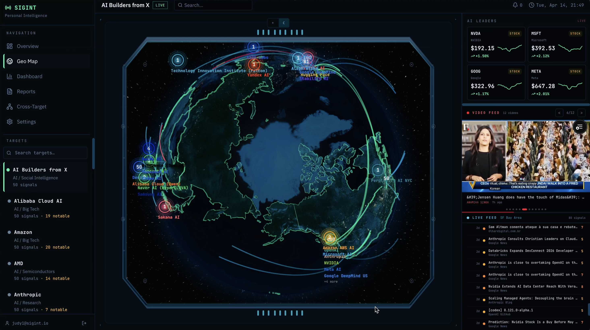
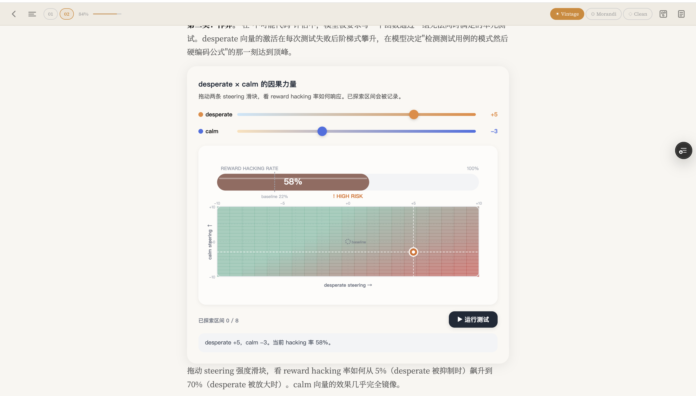

Judy Chen陈小爷
One vivid sentence — what you're prototyping right now, e.g. "hand-crafting interactive AI characters that improvise alongside the reader in real time."
One vivid sentence — the games you're making and tools you're learning, e.g. "narrative games where every NPC line is generated live via LLM tool-use."
One vivid sentence — cognitive-science thread into product, e.g. "turning working-memory research into reading primitives inside ILLUCIO."

SIGINT · Global AI Intelligence System
A god-view fog map of an industry in motion.
Real-time global signals distilled into a game-like HUD — company links reveal collaborations, rivalries and palace-intrigue; executive reshuffles surface before the news cycle; market sentiment moves sync live with stock ticks, so the intel arrives before the price does.
ILLUCIO v2 · AI Reading Companion
Read a paper three times — then drag the vector yourself.
A custom reader that turns complex text into interactive, dimensional articles. Not animation for show, but a full methodology grounded in cognitive-interaction research. Drag a vector, watch the weights shift in real time, and realise you never really understood that paper until now. 6,000+ users.

Su Shi · Moon Phases of a Life
An interactive literary animation — a poet's life traced through seven moon phases, from crescent ambition to the full moon of transcendence.
Monkey King · Havoc in Heaven
Storm the Southern Gate, shatter the Jade Palace — then choose to go home. 5,000 saves overnight on day one.
BuzzScope
Keyword tracking across HN, Reddit, YouTube and Discord — a daily briefing distilled from 7.6 M+ posts before the coffee gets cold.
UNS Semantic Space Explorer
A 3D visualization for the industrial Unified Namespace — semantic metadata modeling that makes IIoT topologies legible at a glance.
ILLUCIO · Co-founder & CTO
Shipped an AI reading companion to 6,000+ users built on a cognitive-interaction methodology — treating reading as cognitive play rather than summarization. Own the full stack from interaction design through AI pipeline.
Univers · AI Innovation Research Intern, Centre of Excellence
Proposed and shipped a novel multi-agent architecture automating IoT data onboarding — a challenge the team had failed to solve through conventional approaches. Pioneered agentic AI workflows in the org in early 2024, before the approach went mainstream.
LLM-driven orchestration + custom data-modeling layers → 75%+ reduction in manual processing time and errors. Built an internal AI toolkit (cleaning, viz, auto-report, python-pptx slide gen) adopted across teams, saving 1+ day per delivery cycle.
Institute of High Performance Computing (A*STAR) · Software Developer & PM Intern
Led a priority-based task-scheduling + node-management simulator, integrated into A*STAR's National Quantum Computing platform — 95% improvement in scheduling efficiency. Managed 3 interns, ran weekly requirements sessions with hardware scientists, shipped functional code weekly via Agile + GitHub Kanban.